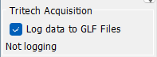
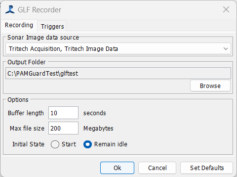
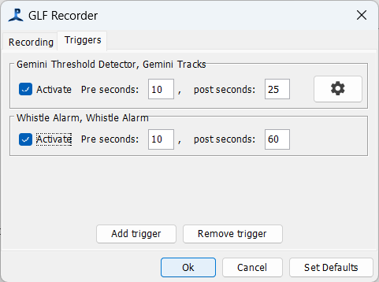
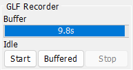

Tritech sonars record data to GLF files. These are in a format developed by Tritech International following their own bespoke data format. These files can be opened for review using the Tritech Genesis software. PAMGuard can read GLF files, either to process data in PAMGuard normal operation mode or to review data using the PAMGuard viewer.
There are two ways of recording GLF data files from PAMGuard. One is built into the Tritech Acquisition module and uses Tritech's own software libraries to write the file, the second method uses a bespoke writer written as a PAMGuard plugin.
Note that GLF files can be pretty big and you may be collecting 200 to 400 Gigabytes of data per day if you record continuously, so consider either an external hard drive or using the PAMGuard backup manager to move files regularly to an external device.
This is the most sensible option if you're recording data continuously, or over extended time periods. The GLF log files are created using Tritech's own software, so are guaranteed to use their correct data format. As well as the main records of sonar image data the files will contain some additional metadata files about the sonar configuration.
To make recordings using the built in writer, go to the Acquisition settings for the Tritech sonars and make sure you've checked the 'Log all data to GLF files' option. GLF logging can also be started and stopped from a small side panel that forms part of the Tritech Acquisition module.
Note that logging will only occur when PAMGuard is running, even though Tritech data are acquired even when PAMGuard is idle.
This method of writing GLF files uses code written in Java that mimics the behaviour of the Tritech software. The big advantage of using this method is that it can respond to events in PAMGuard detectors and initiate recording only when something has been detected. In addition, it can hold some 10's of seconds of data in a buffer, so when a trigger event occurs, it's possible to record from some time prior to the trigger event.
To use this module, from the File / Add Modules menu, select Tritech / GLF Recorder.
From the settings menu, select GLF Recorder settings... to open the dialog, which has to tabs, one for general recording options, the other for setting up triggers.

Set the image data source, which will be from the Tritech Acquisition module. Set the location the files should write to.
Set the buffer length in seconds, but beware of making this too big. As a rule of thumb, each Gemini record uses nearly a megabyte of memory, so a 10s buffer at 5 frames per second is going to require 50 Megabytes of memory, which will be fine, but abuffering several minutes of data might start to cause memory issues.
Set the maximum file size in Megabytes. Tritech recommend 300 Megabytes, though up to 1000 Megabytes will be OK and will generate fewer files.
Set the initial state: this controls whether it will start continuous recording as soon as PAMGuard processing starts.

Triggering of recordings is controlled from the Triggers tab. you can add as many triggers as you like and don't have to restrict yourself to triggering of the Tritech Detector. i.e. you could trigger GLF recording in the event of a detection in any of PAMGuard's acoustic processing modules.
Use the 'Add trigger' and 'Remove trigger' buttons to add and remove trigger. For each trigger you can set the number of seconds of data to take from the buffer prior to the trigger event and the number of seconds after the event.
Some trigger events, such as track detection in the sonar data can go on for several seconds (or minutes in the case of some cetacean tracks). It can also take a few seconds for many detectors to create an event. For example, if an animal track is detect in the sonar data, it can take several seconds for the algorithm to decide that it's a genuine track. You should therefore make the data buffer in the recorder a few seconds longer than the pre seconds you want to record for each trigger.
If multiple triggers occur close in time, or a triggering event updates (e.g. as a track get's longer) then the recording time is simply extended to the 'post seconds' after the end of the last event update time.
A small side panel provides controls to manually start and stop recording.

If the 'buffered' button is pressed, then the entire contents of the buffer will be written to the GLF log file.